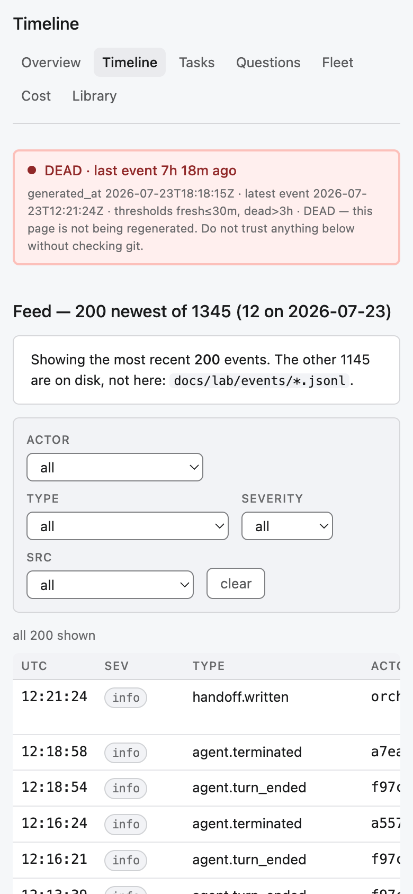
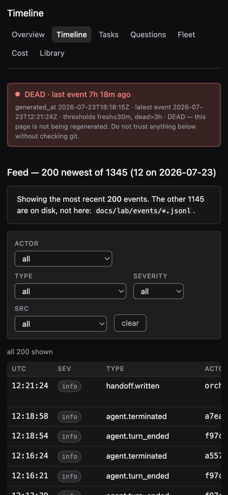

Acceptance epic GSL-138 · regression over prior findings · main @ 54fe290 · tracking task GSL-144
Verifies that already-closed findings stay closed in the committed artifacts. Not a fresh audit — it hunts no new problems, fixes nothing.
git show 54fe290:<path>), never the modified file on disk. Source under tools/lab/ui/src is clean (tree == HEAD) and is grepped directly.
GSL-114 is measured live in Chromium at 390×844 (viewport, never fullPage). All 22 invariants hold — no [REGRESSION] tickets were filed.
| Ticket | Invariant (must be true in the artifact) | Verdict | Evidence — line:file / frame |
|---|---|---|---|
| GSL-113 critical |
Mobile projection degrades instead of claiming FRESH forever — header re-graded, two-ages caveat present. | HOLDS | mobile/README.md:3,5 — header “🔴 DEAD at build … 5h 56m old at that moment”; caveats “at build time”, “two ages”. |
| GSL-114 major |
Timeline @390px: no page overflow; the two summary tables’ n column fits the card (with .wrap scroll fallback). |
HOLDS | Chromium 390px: scrollWidth==clientWidth==390, pageOverflow 0, 7 nav links; summary tables 366==366 in .wrap overflow-x:auto (theme.ts:277). See frames below. |
| GSL-115 major |
Without JS the header does not assert “FRESH · Live … right now”; the live verdict is JS-only. | HOLDS | site/index.html <noscript>: “frozen at the build … Trust the timestamp, not the tense.” Live-verdict string lives only in the JS data map. |
| GSL-116 minor |
Overview prints the question type with a semantic colour modifier (BLOCKER ≠ FYI grey). | HOLDS | screens/overview.tsx:73 — class={`tag ${i.type}`}. |
| GSL-117 minor |
Filter select/button borders meet WCAG 1.4.11 (≥ 3:1). | HOLDS | theme.ts:432–436 — .filters select/input/button use --line-strong (measured 3.95:1 light / 3.87:1 dark). |
| GSL-118 minor · fix-wave 1 |
Context gauge reads “X% (rolls at Y%)”, never the “N% of M%” product misreading — in source and built pages. | HOLDS | chronicler.py:1328 — "%d%% (rolls at %d%%)"; grep [0-9]+% of [0-9]+% over built pages → 0. |
| GSL-119 minor |
.unknown no longer italicises the whole clock container; axis labels stay upright. |
HOLDS | theme.ts:355–356 — .unknown{font-style:normal}, dotted underline scoped to span.unknown; clock styling scoped to .clock.unknown .clock-val (235–236). |
| GSL-120 major |
Cost declares its per-cycle incompleteness rather than silently showing fewer rows than promised. | HOLDS | site/cost.html — “30 of the 107 cycles the ledger counts have no per-cycle row here, so every sum below is LOW by an unknown amount”; “107 cycles run”. |
| GSL-121 major |
Detail values are returned whole and wrap; no silent .slice(0,90) mid-word clip. |
HOLDS | components.tsx:207–218 — “THE VALUE IS RETURNED WHOLE … values WRAP rather than clip”; the old .slice(0,90) removed. |
| GSL-122 minor · fix-wave 1 |
Timeline provenance caption prints the computed hook share, not “that half of the log”. | HOLDS | site/timeline.html:469 — “that 93% of the log”; source screens/timeline.tsx:178 uses mechanical_share; “that half” → 0 hits. |
| GSL-123 minor · fix-wave 1 |
Library cross-index: an untitled row carries an unknown marker; zero blank title cells in the built page. |
HOLDS | site/library.html — 1 unknown marker (“no first heading to read a title from”), 0 <td></td>, 171 rows; source screens/library.tsx:86. |
| GSL-124 major |
Meter classes .ok / .warn / .dead are declared, so a warning renders in warn ink, not body colour. |
HOLDS | theme.ts:324–326, 346–348 — .tag.ok/.warn/.dead + span.ok/.warn/.dead; mirrored in built pages’ inline CSS. |
| GSL-125 minor |
Epic coverage chip differs for ok vs warn (colour carries information). | HOLDS | theme.ts:324–325 — .tag.ok uses --ok-*, .tag.warn uses --warn-* (distinct fill + border). |
| GSL-126 major |
The staleness banner re-ages against the reader’s clock every second inside the fresh window (grade still only worsens). | HOLDS | client.ts:41–63 — regradeStaleness(); the early-return-that-froze-the-age bug is removed and documented (“one page, two ages, one of them false”). |
| GSL-127 major |
Library “files” column shows the real file count, not the list-cutoff cap of 40. | HOLDS | screens/library.tsx:108–112 — “s.count is now the count of files FOUND, not a list-cutoff limit”; bundle shelves Dev history 99, Handoffs 47. |
| GSL-128 major |
An owner-answered question is not filed under “Decided without you”. | HOLDS | screens/questions.tsx:160–164 — split by authorship: decidedByYou = answered_by==="owner"; the rest is “without you”. |
| GSL-129 major |
Fleet’s “N live workers” KPI no longer contradicts all-ended cards — the two sources are reconciled in prose. | HOLDS | screens/fleet.tsx:149–159 — bridge note: “live workers … counts panes open right now … these cards are every worker the log could name … Two sources, two questions.” |
| GSL-130 minor |
Tasks epic rows print the PR link once — no doubled #NNN#NNN token. |
HOLDS | site/tasks.html — #[0-9]+#[0-9]+ → 0; adjacent </a><a … pull> → 0. |
| GSL-131 major |
Library headings are not cut at 110 chars mid-word in the render bundle. | HOLDS | render_bundle.json — 19 titles exceed 110 chars (cap gone); 0 titles end in an ellipsis; the single 110-char title ends on “)”. |
| GSL-132 minor · fix-wave 1 |
Prose pack: Tasks “Last polled … ago” (not “old”) + data-age-suffix contract; Cost tautologies gone; Overview two-ages sum is exact. |
HOLDS | tasks.tsx:176 suffix="ago", client.ts:195 reads it back; built tasks carries data-age-suffix="ago"; Cost “no token ceiling” echo → 0; status.json max_event_age_s 21411 == generated_at − latest 21411. |
| Ticket | Invariant (must be true in the artifact) | Verdict | Evidence — line:file |
|---|---|---|---|
| GSL-142 docs |
dev_history README documents the per-task assets convention, the file-naming scheme, and the run-vs-dev_history separation. | HOLDS | docs/dev_history/README.md:12–31 — assets/<TASK-KEY>/, naming <page>-<width>-<theme>.png, historical footnote, run-copy is one-way. |
| GSL-143 docs |
verifications README is a complete run standard: path/numbering, EN+RU dashboard, mandatory design/, fullPage ban (1280 & 390, both themes), numbered items with Jira chips, file:// self-containment, references runs/01. |
HOLDS | docs/reports/verifications/README.md — all listed points present; GSL-138/runs/01/ cited as the reference example. |


Регрессионный лейн run 02 по приёмочному эпику GSL-138, на main @ 54fe290. Задача — подтвердить, что ранее закрытые находки остаются закрытыми в закоммиченных артефактах. Новых проблем не искал (это параллельный fresh-аудитор), ничего не чинил.
Итог: 22 из 22 инвариантов HOLDS. Регрессий (REGRESSED) — 0. Непроверяемых (NOT-VERIFIABLE) — 0. Новых [REGRESSION]-тикетов не заведено.
.unknown не протекает, Cost честно объявляет усечение, Library показывает реальные счётчики файлов и маркер unknown, Tasks не дублирует ссылку PR, баннер переоценивает возраст каждую секунду.21411 == 21411), «that 93% of the log», маркер untitled доехал до построенной страницы, суффикс «ago» + контракт data-age-suffix.Ключевое методическое решение. Рабочее дерево грязное после параллельного chronicler-прогона, поэтому все built-инварианты проверялись по закоммиченному блобу (git show 54fe290:…), а не по изменённому файлу на диске; исходники tools/lab/ui/src чисты (дерево == HEAD). GSL-114 измерен вживую в Chromium на 390×844 (viewport, не fullPage).